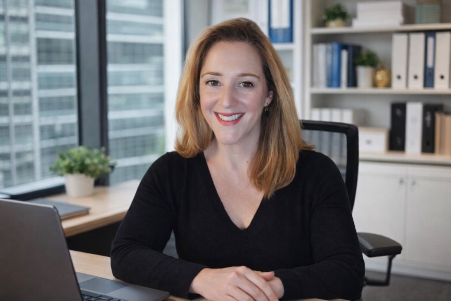

Consultancy
Your Spain Digital Nomad Visa, sorted
Expert visa and residency guidance for UK and US citizens from specialist Katherine Barnes, powered by the Barcelona Digital Nomads community.

Your consultant
Katherine Barnes
Spanish Visa & Residency Specialist · The Visa Desk Spain
Katherine is a native English speaker from the UK who has lived in Spain for over 10 years. She specialises in Spanish visas and residency, helping English-speaking clients through a process that can feel overwhelming on your own.
10+years living in Spain
100+successful visa approvals
UK & UScitizens supported
1-to-1 visa consultation
€55 / 45 minutes
- Overview of the Spanish Digital Nomad Visa
- Assessment of your personal and professional situation
- Guidance on the documents you'll need
- Application timeline and step-by-step process
- Alternative Spanish visa options if the Digital Nomad Visa isn't the right fit
Free monthly webinars
Live online sessions on Tuesdays at 7 PM CET, hosted by Katherine and the BDN community. Get the latest updates on the Digital Nomad Visa, then put your questions to an expert in the live Q&A.
See upcoming webinars →
A community when you land
Beyond the paperwork, BDN's weekly meetups, workshops, and coworking sessions connect you with locals and newcomers who've been through the same move.
New in town? Start here →
“She’s thorough in her document checks, responsive to questions, and knows the process well. I looked at other lawyers before, and she was by far the most caring and trustworthy about it all.”
“It has been worth every penny to work with Katherine. She’s warm, encouraging, and a true professional.”
“Katherine was truly wonderful. She walked me through the process, helped me get my U.S. paperwork together, and made it happen!”
Consultations are delivered by Katherine Barnes of The Visa Desk Spain. Barcelona Digital Nomads is not a law firm, and the information on this page isn't legal or immigration advice.
Thinking about the move?
Book a 45-minute consultation with Katherine, or email contact@digitalnomadvisaspain.online with your questions.